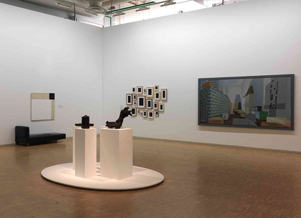
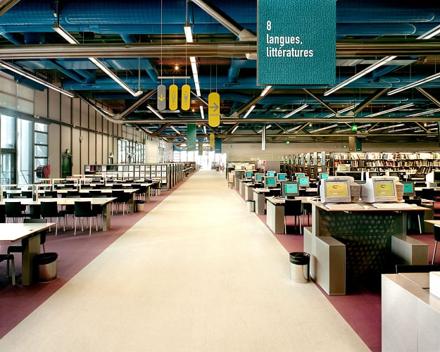
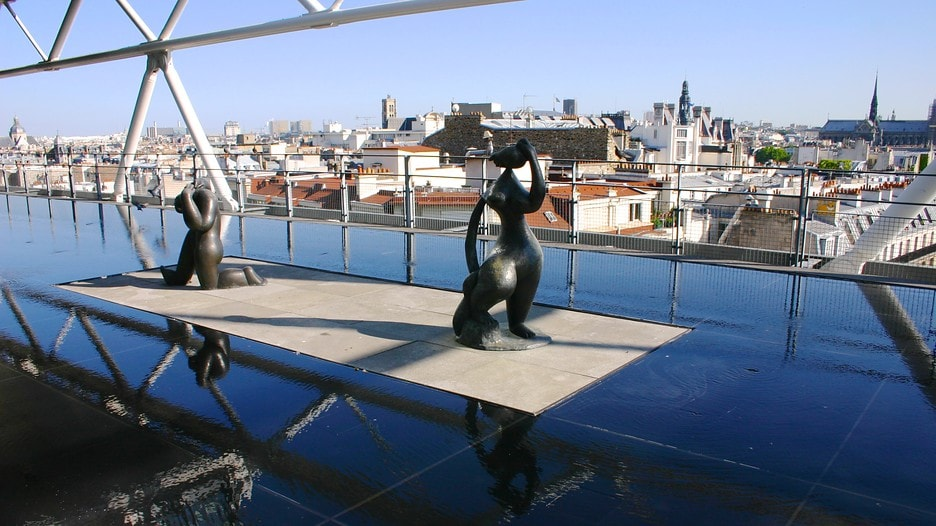
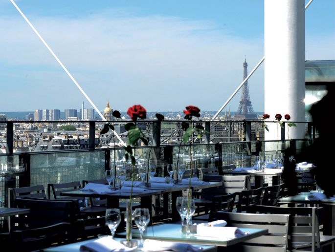

Autocensure
Quelles sont les moyens mis en oeuvre par le Centre afin d’éviter une autocensure de la part des potentiels visiteurs ?
Le Centre Pompidou a recourt à de nombreux moyens afin d’attirer la plus grande audience possible. Tout d’abord de par son architecture qui est originale et moderne et qui peut susciter la curiosité des personnes. En effet cette architecture est très différente d’un musée traditionnel qui est plus sobre. Cela montre donc que n’importe qui peut aller dans ce Centre.
On y trouve également une très grande diversité de services proposés comme des activités pédagogiques (notamment une bibliothèque, un musée, une exposition sur les châteaux de sable, …), un audioguide, des boutiques de cadeaux, une librairie, un restaurant. Cette diversité permet de toucher toute la population qui peut trouver son bonheur dans ses domaines favoris.
De plus le musée présente la plus grande collection d’art moderne et contemporaine d’Europe avec des œuvres de Picasso, Kandinsky ou encore Dali. Cet art qui est représenté par de nombreuses possibilités tels que les tableaux, les sculptures, les vidéos permet de plaire à tout le monde. En effet les personnes qui aiment les tableaux apprécieront cet art tout comme les personnes qui préfèrent les sculptures ou vidéos par exemple.

La grandeur de la bibliothèque, l’ambiance de travail et la disponibilité de nombreux documents en langues étrangères attirent également de nombreux visiteurs français mais également étrangers qui peuvent ainsi profiter de ces conditions afin de travailler ou de se cultiver.

De plus il y a également des visites en langue étrangère (anglais, allemand, espagnol, italien) qui encouragent les visiteurs étrangers à visiter ce monument. Le prix d’entrée proposé encourage la visite de ce monument. En effet l’accès au musée et aux expositions est gratuit pour les moins de 18 ans, l’accès au musée est gratuit pour les moins de 26 ans et l’accès est gratuit pour tous le premier dimanche du mois.
Enfin la grandeur du Centre d’une hauteur de plus de 50m offre une vue exceptionnelle sur les monuments de Paris à savoir la Tour Eiffel, Montmartre, l’Opéra Garnier, Notre-Dame de Paris etc…

